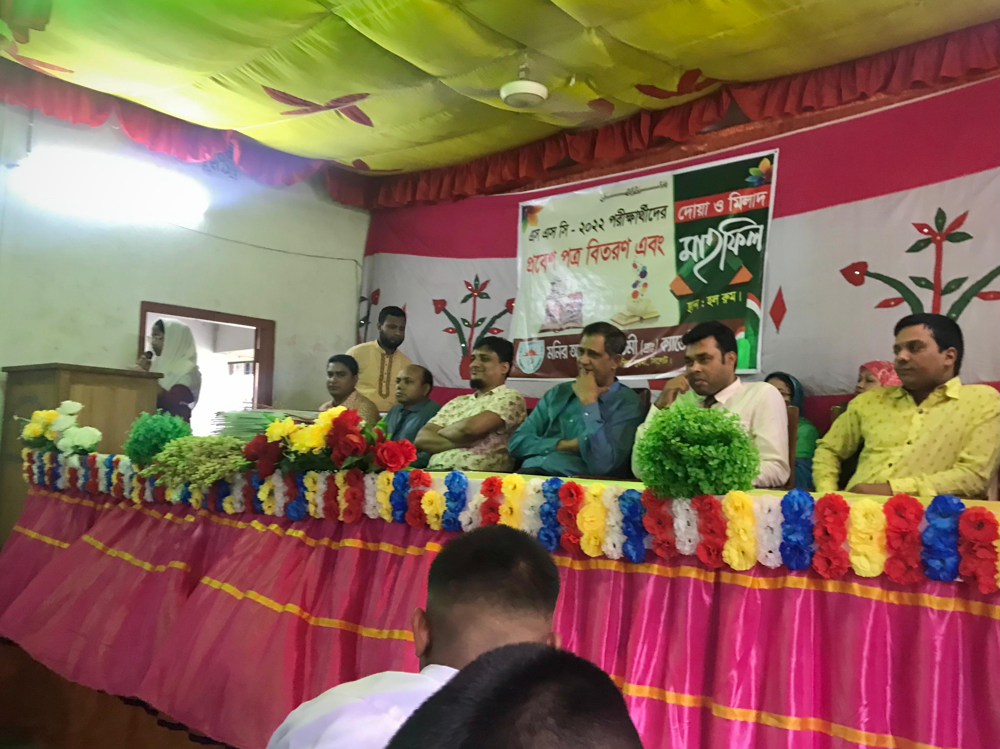

Memories of my school days
12:19 PM
12:19 PM
The school life is the best life. Anyone who has been a student, knows what school life is all about: It is the golden period of learning and it truly impacts students’ lives. The importance of school life cannot be negated and it is a vital formative experience for children and adult students alike.
School represents an important learning experience which teaches us self-confidence, motivation, and the will to always give our best. In addition, school blesses us with friends, many of whom remain with us for the rest of our life. School days really are the best days of our lives, and I have only good memories of my school days. For me, these days are like an invaluable treasure.
I clearly remember my first day at school and the memories of this day are still vivid. I can still feel how warmly I was welcomed at the school. Such a warm welcome can truly define a child’s school experience in the best possible way.
As a school boy I learned to co-operate and got motivated and shaped in the company of my best friends. I still remember the first year wishes we received from my teachers and I always regard my primary school life memories as a treasure.
My time in high school was an equally valuable learning experience and I met some of the best friends I have today in high school. Admittedly, I made a lot of blunders and mistakes during my high school years. But thanks to my sincere friends and honest teachers I was always rescued from too much trouble. This is how high school taught me the T true meaning of co-operation and love.
Looking back, I realize how ignorant I was during my school days and how many shortcomings I had. However, my time in high school showed my how important school life is and I would not have the great friends, good knowledge, good experiences and good memories I have today if it was not for my high school years.
It is said that a person always remembers their first day at school and their last day at school. The first day a child remembers because it came there weeping. And the last day a student remembers because they leave school, weeping again. In my case, I remember clearly my first day at school and my last day at the school. The joys of school life are surely countless. Indeed, the school days are the best of our lives.
I can't forget my friends in any way, maybe move on is impossible💔